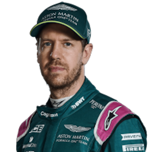
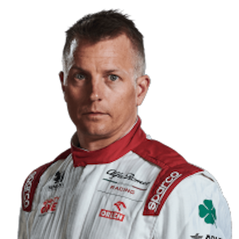
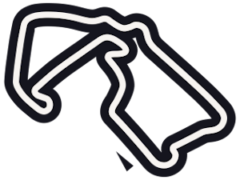
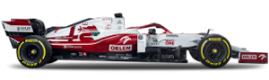
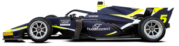
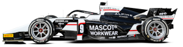
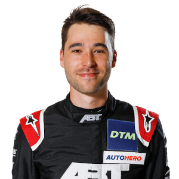

- Formuła 1
- Kierowcy
- Max Verstappen
- Lewis Hamilton
- Valtteri Bottas
- Sergio Perez
- Lando Norris
- Charles Leclerc
- Carlos Sainz
- Daniel Ricciardo
- Pierre Gasly
- Fernando Alonso
- Esteban Ocon
- Sebastian Vettel 
- Lance Stroll
- Yuki Tsunoda
- George Russell
- Kimi Räikkönen 
- Nicholas Latifi
- Antonio Giovinazzi
- Mick Schumacher
- Rober Kubica
- Nikita Mazepin
- Zespoły
- Mercedes
- Redbull
- Ferrari
- McLaren
- Alpine
- AlphaTauri
- Astron Martin
- Williams
- Alfa Romeo Racing
- Haas F1 Team
- Tory
- Bahrain - Bahrain International Circuit
- Włochy - Autodrom Enzo E Dino Ferrari
- Portugalia - Autódromo International Do Algarve
- Hiszpania - Circuit De Barcelona-Catalunya
- Monako - Circuit De Monaco
- Azerbejdżan - Baku City Circuit
- Francja - Circuit Paul Ricard
- Austria - Red Bull Ring
- Wielka Brytania - Silverstone Circuit 
- Węgry - Hungaroring
- Belgia - Circuit De Spa-Francorchamps
- Holandia - Circuit Zandvoort
- Włochy - Autodrom Nazionale Monza
- Rosja - Sochi Autodrom
- Turcja - Intercity Istanbul Park
- USA - Circuit Of The Americas
- Meksyk - Autódromo Hermanos Rodriguez
- Brazylia - AUTÓDROMO JOSÉ CARLOS PACE
- Katar - LOSAIL INTERNATIONAL CIRCUIT
- Arabia Saudyjska - JEDDAH CORNICHE CIRCUIT
- Abu Dhabi - YAS MARINA CIRCUIT
- Samochody
- Mercedes
- Redbull
- Ferrari
- McLaren
- Alpine
- AlphaTauri
- Astron Martin
- Williams
- Alfa Romeo Racing 
- Haas F1 Team
- Formuła 2
- Kierowcy
- Robert Shwartzman
- Oscar Piastri
- Guanyu Zhou
- Felipe Drugovich
- Dan Ticktum
- Jehan Daruvala
- Liam Lawson
- Jüri Vips
- Christian Lundgaard
- Théo Pourchaire
- Jack Doohan
- Clément Novalak
- Enzo Fittipaldi
- Guilherme Samaia
- Roy Nissany
- Marcus Armstrong
- Olli Caldwell
- Ralph Boschung
- Jake Hughes
- Alessio Deledda
- Bent Viscaal
- Marino Sato
- Zespoły
- Prema
- Uni-Virtuosi
- Carlin
- Hitech Grand Prix
- Art Grand Prix
- Mp Motorsport
- Charouz Racing System
- Dams
- Campos Racing
- Hwa Racelab
- Trident
- Tory
- Bahrain - Bahrain International Circuit
- Monako - Circuit De Monaco
- Azerbejdżan - Baku City Circuit
- Wielka Brytania - Silverstone Circuit
- Włochy - Autodrom Nazionale Monza
- Rosja - Sochi Autodrom
- Arabia Saudyjska - JEDDAH CORNICHE CIRCUIT
- Abu Dhabi - YAS MARINA CIRCUIT
- Samochody
- Prema
- Uni-Virtuosi
- Carlin 
- Hitech Grand Prix
- Art Grand Prix 
- Mp Motorsport
- Charouz Racing System
- Dams
- Campos Racing
- Hwa Racelab
- Trident
- DTM
- Kierowcy
- Chistopher Haase
- Daniel Juncadella
- Timo Glock
- Hubert Haupt
- Alex Albon
- Sheldon Van Der Linde
- Lucas Di Grassi
- Sofia Flörsch
- Marco Wittmann
- Liam Lawson
- Dev Gore
- Luca Stolz
- Lucas Auer
- Maximilian Götz
- Kevin Van Der Linde 
- Christian Klein
- Maximilian Buhk
- Maximilian Paul
- Arjun Maini
- Mirko Bortolotti
- Vincent Abril
- Michael Ammermüller
- Esteban Muth
- Nico Müller
- Marvin Dienst
- Nick Cassidy
- Philip Ellis
- Mike Rockenfeller
- Markus Winkelhock
- Esmee Hawkey
- Zespoły
- Audi
- BMW
- Ferrari
- Lamborghini
- McLaren
- Mercedes-AMG
- Porshe
- Tory
- Portugalia - Portimao
- Niemcy - Lausitzring
- Włochy - Imola
- Niemcy - Norisring
- Niemcy - Nürburgring
- beligia - SPA
- Austria - Red Bull Ring
- Niemcy - HockenHeimring
- Samochody
- Audi
- BMW
- Ferrari
- Lamborghini
- McLaren
- Mercedes-AMG
- Porshe

Najwyższa pozycja siatki 2
Data urodzenia 07.02.1996
Miejsce urodzenia Rouen, Francja")

Najwyższa pozycja siatki 2
Data urodzenia 15.02.1998
Miejsce urodzenia King's Lynn, Anglia")

Pozycje bieguna 127
Najszybsze okrążenia 85")

Pozycje biegunowe 72
Najszybsze okrążenia 75")

Pozycje na biegunach 223
Najszybsze okrążenia 253")

Pozycje biegunowe 156
Najszybsze okrążenia 160")

Pozycje bieguna 20
Najszybsze okrążenia 15")

Pozycje bieguna 1
Najszybsze okrążenia 2")

Pozycje bieguna 1
Najszybsze okrążenia Nie dotyczy")

Pozycje bieguna 129
Najszybsze okrążenia 133")

Pozycje bieguna 1
Najszybsze okrążenia 5")

Pozycje na biegunach Nie dotyczy
Najszybsze okrążenia 2")

Ostatnie modyfikacje 1958, 1983, 1985, 1992, 1994, 1996, 2004, 2005, 2007
Główne imprezy Formuła 1
Blancpain Endurance Series
Auto GP
Seria GP2
Seria GP3
Porsche Supercup
World Touring Car Championship
Europejska Formuła 3
World Series by Renault")


2012 Formuła 3 Euro Series (mistrz)
2012 Masters of Formula 3 (zwycięzca)
2011 Grand Prix Makau (zwycięzca)
2009: Europejska Formuła BMW (wicemistrz)
2007: Formuła Maser Junior (wicemistrz)")

, sięgnął po tytuł wicemistrzowski, ulegając jedynie bezkonkurencyjnemu Meksykaninowi, Estebanowi Gutiérrezowi.")
. Austriak wziął udział także w jednej rundzie Chińskiej Formuły Pilota. Będąc w jednym z wyścigów na podium, zmagania zakończył na 15. miejscu w końcowej klasyfikacji. W obu seriach reprezentował amerykańską ekipę Eurointernational.")


, Isle of Man TT, North West 200, Mistrzostwach Świata Superbike oraz Deutsche Tourenwagen Masters (Niemieckich Mistrzostwach Samochodów Turystycznych).")

 w wyścigach samochodów sportowych. Zespół jest spółką zależną McLaren Group, do której należy większość zespołu.")


.")

Ostatnie modyfikacje 1958, 1983, 1985, 1992, 1994, 1996, 2004, 2005, 2007
Główne imprezy Formuła 1
Blancpain Endurance Series
Auto GP
Seria GP2
Seria GP3
Porsche Supercup
World Touring Car Championship
Europejska Formuła 3
World Series by Renault")
 tor ten znajduje się stałe w kalendarzu Formuły 1. Do roku 2001 używano dłuższej wersji toru (6,825 km) prowadzącej przez las. Później tor został drastycznie skrócony przez Hermanna Tilke do obecnej formy.
Jedno okrążenie ma 4,574 km. Trybuny wokół toru mogą pomieścić 120 000 kibiców.
Na torze w 1988 roku występował Michael Jackson w ramach trasy Bad World Tour.HockenHeimring")

. Ulepszenia obejmują większy dyfuzor dla wydajniejszej aerodynamiki, przednie zawieszenie z podwójnymi wahaczami zapożyczone z RSR, system podkładek pozwalający na zmiany ustawień bez konieczności zmiany ustawienia, większe przednie opony, sprzęgło uruchamiane elektrohydraulicznie, umożliwiające demontaż pedału sprzęgła, ogniwo paliwowe które można skonfigurować do uzupełniania z lewej lub prawej strony pojazdu w zależności od układu obwodu, kamera cofania i system zapobiegania kolizjom, stałe siedzenie z ruchomą skrzynką na pedały i pochłaniające energię elementy zderzeniowe umieszczone w drzwiach dla zwiększenia bezpieczeństwa a także klimatyzację. GT3 R kosztuje 459 000 euro bez podatków")